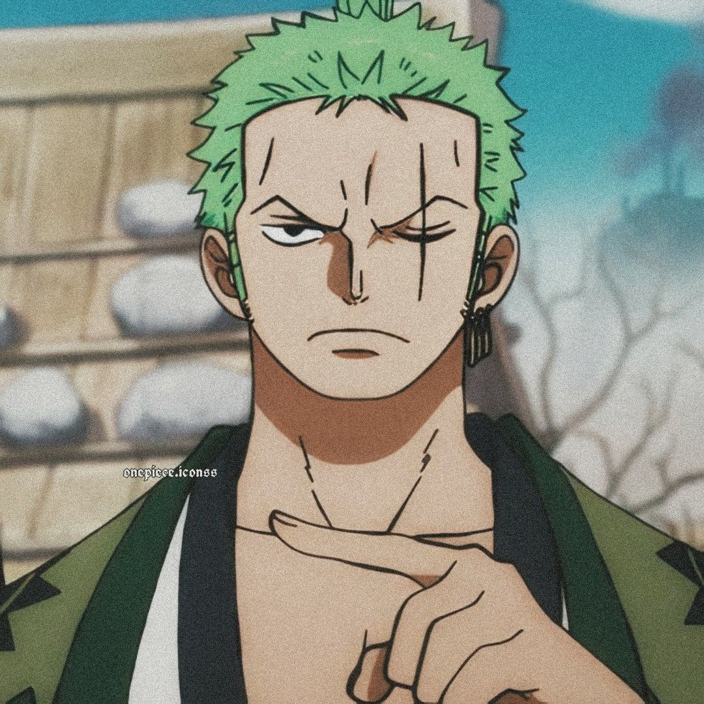

Images of Zoro


Roronoa Zoro,
also known as "Pirate Hunter"
In the story, Zoro is the first crewmate to join Monkey D. Luffy's crew after he is saved (by Luffy and Koby) from being executed at the Marine Base by Captain Morgan. He is the crew's combatant,[4] and one of the two swordsmen of the Straw Hat Pirates, the other being Brook. He also has a habit of frequently going into the wrong locations which is a running gag throughout the whole series.
Abilities - Zoro is uniquely known as an expert of Santōryū (Three Sword Style), where he wields a third sword with his mouth in combat. Throughout the series, his primary sword is Wado Ichimonji, one of the World's 21 great swords that he inherited from a childhood friend Kuina, and is frequently the sword that he wields in his mouth, while the other two swords frequently change and improve over time
Haki - He is proficient in both Armament and Observation Haki, as well as being one of the few known characters who possess Conquerors Haki. During his battle against King, Zoro Unlocks a advanced form of Conquerors Haki (Called Infusion) And it Gave him The ability to coat his Swords with it, similar to Armament Haki, which could further enhance his attacks. and also a advanced form Of Armament Haki (Called Emission) to shoot a short blast of Haki from a distance,[8]